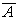

|
L'algebra di Boole (George Boole 1815-1864, uno dei fondatori della moderna logica simbolica) considera funzioni di variabili che possono assumere solo due valori logici: vero o falsoa questi valori vengono generalmente associati i simboli:
|
||||
|
Nel caso di circuiti elettrici: una variabile può indicare:
di un predeterminato valore di tensione in un punto di un circuito, si può convenire che: nel caso in cui la tensione coincida con il valore predeterminato, la variabile assume il valore 1e che, viceversa: la variabile assume il valore 0 nel caso in cui la tensione sia diversa dal valore predeterminatoAdottare questa convenzione ( associare cioè la presenza di una predeterminata tensione al valore vero
della variabile) , corrisponde ad operare in logica
positiva, viceversa, associare il valore
vero alla condizione in cui la tensione non assume il valore
predeterminato, corrisponde ad operare in logica negativa. Le variabili possono essere poste in relazione tra loro da legami
funzionali che, dal punto di vista logico, si identificano con dei connettivi
logici che esprimono il legame funzionale fra
più variabili. la variabile B è vera se e solo se A è falsa.Il legame funzionale costituisce dal punto di vista logico una proposizione che può, in base a quanto detto, assumere solo due valori logici : vero e falso. Il connettivo logico (proposizione) portato ad esempio viene
espresso dalla notazione:  viene indicata la variabile inversa di A (la variabile cioè che è vera se A è falsa e che, viceversa, è falsa se A è vera) talora, in alcuni testi, per motivi tipografici, la variabile inversa viene indicata con /A. |
|||||
| |
E-mail: pte@pte.it |